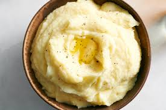

Mashed Potatoes

Creamy and delicious mashed potatoes!
These homemade mashed potatoes are perfectly rich and creamy, full of great flavor, easy to make, and always a crowd fave.
Ingredients
- 5 pounds of potatoes
- 2 cloves of garlic
- Fine sea salt
- 6 tablespoons of butter
- Whole milk
- Cream cheese
Steps
- Cut potatoes
- Boil the potatoes
- Prepare melted butter mixture
- Pan-dry the potatoes
- Mash the potatoes
- Stir everything together
- Taste and season
- Serve warm